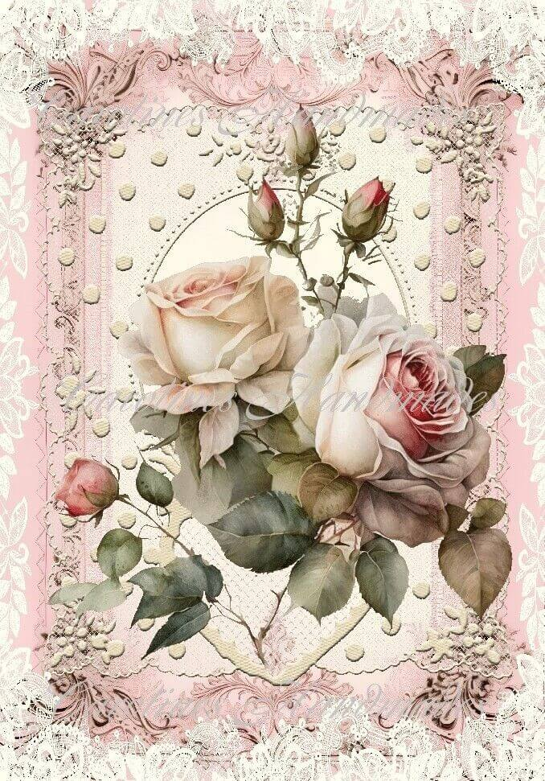
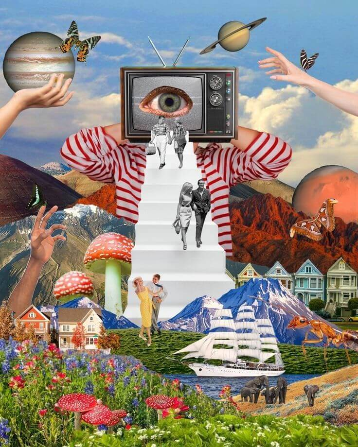
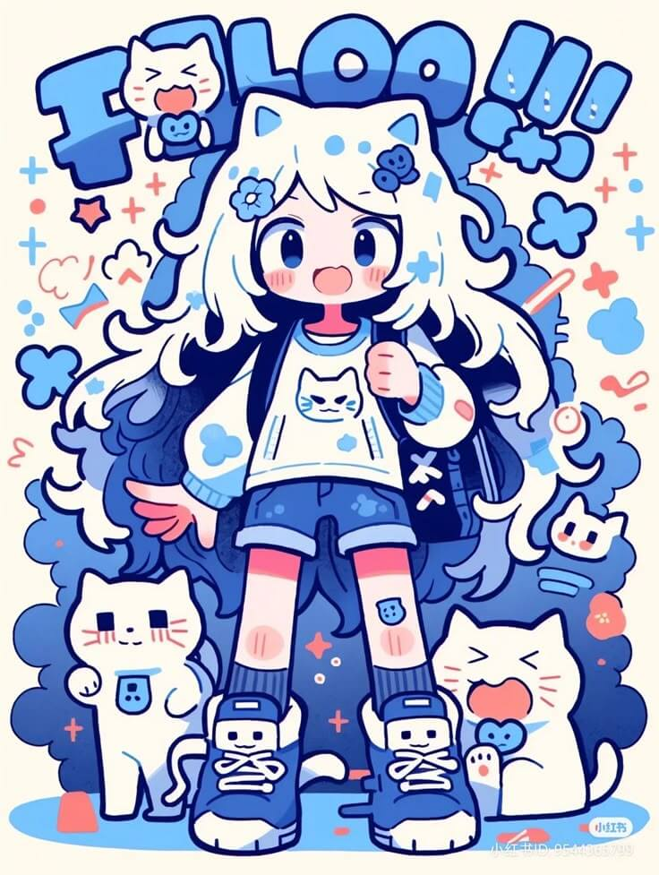

资源
- 40 Design Style Names You’ve Been Looking For (Find References Faster)
- 你一直在寻找的 40 种设计风格名称（更快地找到参考）_哔哩哔哩_bilibili
- Graphic design styles name guide: Names, examples & descriptions
正文
Neoclassical-新古典主义
在华丽的巴洛克和俙谐的洛可可乐章之后，新古典主义进入了舞台。如果您是希腊和罗马肖像和建筑的经典外观的粉丝，那么这种新古典主义风格就是您一直在寻找的。
这种风格出现在 18 世纪末至 19 世纪初，反映了启蒙运动对古典古典的迷恋。新古典主义艺术强调简单、对称和内敛的宏伟，反映了在先前风格（巴洛克和洛可可风格）的过度之后对秩序和理性的回归。如今，您经常会在正式的印刷版面中看到新古典主义的影响，甚至是想要宏伟、永恒氛围的室内设计设置。
Note
新古典主义艺术与其他经典艺术形式的区别之一是使用红色和朴实的调色板。红色在新古典主义艺术中经常被战略性地使用，以创造对比和突出焦点，为原本柔和的古典配色方案增添丰富性。
Baroque-巴洛克
当谈到巴洛克风格时，请考虑戏剧性的细节、漩涡状的装饰和强烈的对比，使一切都感觉奢华和戏剧性。这种风格从 17 世纪初到 18 世纪中叶在欧洲蓬勃发展，主导了当时的建筑和艺术。
但这里有一个有趣的背景故事——巴洛克风格不仅仅是看起来花哨。这是天主教会在反宗教改革（天主教对新教改革的回应）期间的一项权力举措，旨在将情感和戏剧带回宗教艺术中。
这个想法是什么？为了创造令人敬畏的反应，在新教改革之后将人们带回天主教，将事物剥离到最基本的东西。
Aurora-极光
Aurora 是一种渐变风格，模仿北极光 （aurora borealis） 的迷人色彩和光芒。想想紫色、粉红色、蓝色和绿色的平滑过渡，变成梦幻般的渐变。它在 2010 年代后期成为一种具有代表性的现代美学，数字艺术家采用大胆、明亮的色彩过渡。
最近，您会随处可见 Aurora 渐变，从时尚的品牌项目到 UI/UX 背景，再到倾向于宇宙或神奇主题的数字艺术。要获得额外的边缘，请尝试向这些渐变添加一点颗粒或模糊。这种简单的调整本身就是一种趋势，为设计带来清新、空灵的光芒。
Ethereal-飘渺/空灵
Ethereal 风格专注于柔和的色调、精致的层次感，以及普遍通风、超凡脱俗的氛围，带有扭曲、模糊的图像和照片——就像你走进了梦境。虽然轻快的美学在整个艺术史上都出现过，但这种特殊的风格在 2010 年代变得格外流行，尤其是在摄影和网页设计方面。
我们在高端时尚 Lookbook、网站主图和旨在营造柔和、精致感觉的概念艺术作品中看到了空灵设计。它有点类似于超现实主义设计，但更立足于现实。Ethereal 设计不是创造完全梦幻或超凡脱俗的场景，而是拍摄逼真的图像，并赋予它们柔和、超凡脱俗的光芒——几乎就像通过梦幻般的幻觉镜头观看它们一样。
Note
空灵风格非常适合需要怀旧氛围的设计项目。
Filigree-金银丝细工
花丝是关于复杂花边图案的，其灵感来自复古珠宝和历史建筑中精致的金属制品、大理石和木材设计。它植根于数百年的欧洲工艺，尤其是 17 世纪和 18 世纪的工艺。花丝名称来自拉丁语 filum（线）和 granum（谷物），指的是珠宝制作中使用的细小金属线。
在平面设计中，金银丝通常表现为奢华的漩涡、华丽和精细的细节，瞬间传达出优雅和精致。
您经常会在高档包装、婚礼请柬以及任何需要华丽奢华的地方发现金银丝。
Acanthus-莨苕叶
新艺术运动采用流畅的线条、有机的形状和花卉图案，通常与优雅的排版无缝结合。这一运动兴起于 19 世纪后期，深受大自然的影响，并寻求将插图与设计相结合。这场运动一直持续到 20 世纪初，部分原因是作为对工业化大规模生产的回应。
您仍然会看到很多字体和排版受到这种设计风格的影响，它仍然被大量用于海报设计、书籍封面，甚至寻求手工制作、浪漫风格的品牌推广。
Anthropomorphic-拟人化
有没有见过物体或动物在标志、吉祥物或插图中具有类似人类的特征？这就是拟人化设计！虽然它的历史可以追溯到古代神话和讲故事，其中神灵以动物的形式出现，但随着卡通、动画和品牌吉祥物的兴起，这种风格在 20 世纪获得了新的生命。
今天，它是俏皮广告活动、儿童读物、古怪海报甚至复古产品包装的首选风格。
Pixel Art-像素艺术
现在，我们来看看完全不同的东西 - 像素艺术！如果您在 70 年代或 80 年代玩电子游戏长大，您会记得定义那个时代的块状、低分辨率图形。像素艺术，也称为 8 位或位图艺术，由微小的色块组成，调色板通常有限，但充满怀旧魅力。
这种风格在游戏的黄金时代流行起来，在 2010 年代在独立游戏开发者中卷土重来。它现在无处不在，从复古风格的营销（最常用于随意、引人注目的社交媒体帖子）到 Minecraft 等热门游戏的设计美学。
Note
早期的游戏设计师不得不在严格的技术限制下工作，这导致了 Pixel Art 的诞生。今天，这些相同的限制已成为该风格的决定性特征和吸引力！
- 像素画教程【Pixel Logic】完整汉化高清版下载 - 哔哩哔哩
- 像素游戏开发缺少美术怎么办？如何利用AI生成完美的像素风格素材全流程_哔哩哔哩_bilibili
- 【AI绘图】20组关键词，带你领略像素艺术的魅力Pixel Art | Midjourney，关键词，Tag，Prompt，提示词分享_哔哩哔哩_bilibili
Conceptual Sketch-概念草图
近年来最有趣的设计风格之一是概念素描艺术，也称为涂鸦艺术。这种风格的特点是自发的线条、孩子气或天真的绘画以及自由形状。虽然素描一直是艺术表达的一部分，但以涂鸦为中心的艺术在 2000 年代获得了极大的普及，尤其是在网上。今天，它已被用于更专业的环境中，并用于旨在传达有趣、未经修饰的能量的设计，包括创意机构的品牌推广、面向青年的产品和编辑设计。
这种设计风格提供了创作自由，使设计师可以轻松地将手绘草图转换为数字资产。我们在另一篇文章中对这种涂鸦艺术趋势进行了更深入的探讨，并分享了如何将简单的涂鸦上传到 Kittl，对其进行矢量化，并立即为您的平面设计项目创建图像的数字版本。
Luxury Typography-奢华排版
目前平面设计中非常流行的另一种主要设计风格是 Luxury Typography。这种方法侧重于精致的、通常是自定义的字体，并与优雅的脚本和复杂的连字配对。20 世纪的高端时尚品牌在普及这种风格方面发挥了重要作用，尽管其起源可以追溯到经典的书法传统。
Luxury Typography 仍然是高档包装、奢华街头服饰品牌、高档活动邀请函和高端杂志封面的最爱。对这种风格的兴趣日益浓厚是显而易见的。在 Pinterest 上快速搜索“Luxury Typography”会发现大量令人惊叹的示例，展示了其永恒的吸引力。我们有大量的 YouTube 视频，如下所示，这些视频探讨了奢华的排版以及如何将其融入您的设计中。
Japandi-日式北欧风
Japandi 是日本极简主义和斯堪的纳维亚温暖的美丽而平静的结合。想想中性、柔和的调色板、有机材料和纹理，以及来自传统包豪斯布局的灵感（稍后会详细介绍）。
日式风格在 2010 年代后期到 2020 年代流行起来，同时极简主义室内设计潮流浪潮。您会在时尚的网站、生活方式产品品牌以及平静和极简主义的海报设计中发现日本风格的影响。
我们对这种风格进行了深入研究，因为它目前正在迅速流行。事实上，它进入了我们的 2025 年平面设计趋势列表。
Memphis-孟菲斯

现在是经典而充满活力的孟菲斯风格。响亮的几何形状、大胆的色彩和俏皮的图案，这一切都与后现代氛围有关。这种风格在 1980 年代初期首次声名鹊起，多亏了孟菲斯集团，它很快成为那个时代实验设计界的标志。如果您回头观看 80 年代的节目，例如 Saved by the Bell、Seinfeld 和 Full House，您会非常频繁地看到这种图案，无论是在装饰中还是在衣服上。
今天，您会看到孟菲斯的图案出现在复古品牌、寻找乐趣的社论作品和时髦的产品包装中。Kittl 拥有大量设计元素和模板（从社交媒体帖子到营销材料），您可以使用免费帐户访问。
Bohemian-波西米亚
波西米亚风格或波西米亚风格设计融合了全球影响力、分层纹理和朴实而充满活力的调色板。这种风格散发着悠闲、自由奔放的能量，唤起了一种旅行癖和艺术冒险的感觉。虽然波西米亚风格的起源可以追溯到 19 世纪的艺术家社区，但在 1960 年代和 1970 年代的嬉皮士运动中，波西米亚风格设计在很大程度上依赖于明亮多彩的调色板，从而获得了主流流行。
今天，这种风格是活动品牌、时尚系列和生活方式产品的首选，这些产品都融合了创造力和不拘一格的审美。使用正确的排版和设计元素实现波西米亚风格的外观相对简单——最耗时的方面通常是选择完美的调色板。
Shabby Chic-破旧别致风

对于那些被仿旧饰面、柔和的色调和复古浪漫所吸引的人来说，Shabby Chic 是理想的设计风格。这种美学以褪色的花卉、重新利用的家具、怀旧元素和柔软的纹理为特色。
它在 1980 年代末和 90 年代作为主导的室内设计趋势而大受欢迎。在现代设计中，Shabby Chic 仍然广泛用于婚礼请柬、舒适的产品包装和品牌推广，旨在为旨在传达温暖、感伤的触感的企业提供服务。
Farmhouse-农舍
农舍和小屋核心是密切相关的风格，强调质朴的简约、天然的面料和乡村美学。这些风格植根于乡村环境，在 2010 年代通过社交媒体在室内设计和时尚领域得到广泛认可，并在今天继续蓬勃发展。
今天，农舍和小屋核心设计经常出现在家居装饰品牌、精品时尚品牌、自然灵感的书籍封面以及任何寻求温暖、舒适感觉、将我们带入简单生活的项目中。
Victorian-维多利亚
维多利亚时代的设计以华丽的细节、丰富的配色方案和精致的花卉图案为特色。这种风格起源于维多利亚女王 （1837-1901） 的统治时期，影响了 19 世纪的艺术、建筑和装饰。
维多利亚时代设计的现代应用包括优雅的书法、主题活动邀请函、复古品牌，甚至蒸汽朋克美学，它们从那个时代的复杂性中汲取灵感。
Art Deco-装饰艺术
Art Deco 是一种时尚、几何和迷人的设计风格，以对称图案和金属装饰为特色。它起源于 1920 年代和 1930 年代，体现了两次世界大战期间的乐观和奢华。
今天，装饰艺术风格的排版和视觉元素经常用于高档包装、精致的活动品牌和高端室内装饰，传达了深受喜爱的《了不起的盖茨比》时代的富裕。
Art Nouveau-新艺术
新艺术运动采用流畅的线条、有机的形状和花卉图案，通常与优雅的排版无缝结合。这一运动兴起于 19 世纪后期，深受大自然的影响，并寻求将插图与设计相结合。这场运动一直持续到 20 世纪初，部分原因是作为对工业化大规模生产的回应。
您仍然会看到很多字体和排版受到这种设计风格的影响，它仍然被大量用于海报设计、书籍封面，甚至寻求手工制作、浪漫风格的品牌推广。
Note
阿尔方斯·慕夏 （Alphonse Mucha） 是新艺术运动时代最有影响力的艺术家之一。
Mystical Western-神秘西部
Mystical Western 是我们自己敲定的一个术语，用来描述我们经常看到的特定设计风格。Mystical Western 融合了经典的牛仔美学与天体和精神意象。这款单品以沙漠风景、月夜和宇宙符号为特色，将粗犷的美式风格与梦幻般的超凡脱俗的感觉融为一体。
西方艺术的历史渊源可以追溯到 19 世纪，但 2010 年代在另类和波西米亚设计圈中出现神秘的转折。它非常适合音乐节海报、独立服装和品牌推广，旨在捕捉神奇的前沿美学。
Kitsch-媚俗
Kitsch 是一个不太知名的设计风格名称。它采用鲜艳的色彩、夸张的图像和俏皮的流行文化参考，将俗气转化为一种艺术形式。这种风格植根于怀旧和讽刺，经常融入复古图形和幽默元素。虽然媚俗的概念可以追溯到 19 世纪后期，主要用于室内设计，但它在 20 世纪中叶的波普艺术中经历了重大复兴。
今天，媚俗设计常见于新奇产品、贴纸设计、讽刺品牌和倾向于夸张幽默的营销活动。在室内设计中，媚俗采用了 DIY 和升级再造的原则。
Note
Kitsch 是德语中“垃圾”的意思，突出了这种设计风格的争议性。
3x3 Grid-3x3 网格
3x3 网格设计是我们创造的一个术语，用于描述结构化的 9 个方框布局，它将视觉对象组织成干净、易于理解的格式。虽然网格系统长期以来一直是设计的基本组成部分，但随着社交媒体美学和情绪板的兴起，这种特殊的布局在 2010 年代越来越受欢迎。
3x3 网格常见于 Instagram 提要、作品集展示、精品品牌和服装设计中，因其视觉冲击力而又有序的构图而受到重视。它是创建有凝聚力的设计的完美选择，该设计无缝融合了多个主题或概念，同时赋予每个元素同等的重要性。
Y2K
Y2K 设计完美地捕捉了千禧年之交的复古未来主义氛围，将网络风格的视觉效果与俏皮、高能量的感觉融为一体。它融合了邋遢的纹理、霓虹灯渐变和未来主义的活泼排版。Y2K（2000 年）设计最初在 1999 年至 2000 年间蓬勃发展，自 2020 年左右以来已经卷土重来。
从时尚社论和数字拼贴画到街头服饰和品牌活动，到处都能看到它，它既吸引着第一次发现它的年轻一代，也吸引了重温怀旧情怀的千禧一代。
Bauhaus-包豪斯
包豪斯将设计剥离到其功能要素，专注于大胆的几何形状、原色和最少的装饰。它的主要理念是形式而不是功能和清晰度。包豪斯诞生于 1919 年至 1933 年活跃于德国艺术学校，为全球现代主义设计奠定了基础，影响了我们之前探讨的日本设计等关键设计风格。
包豪斯 （Bauhaus） 今天主要用于品牌材料中，用于社论和网页设计以及产品设计。它利用沉重的网格布局来打造时尚的几何外观。
Brutalism-粗野主义
应用于平面设计，粗野主义几乎与精致的极简主义相反，偏爱鲜明的布局、大胆的单色调色板和不精致的排版。它故意原始，打破传统美学，做出大胆的声明。这种艺术风格直接源于 20 世纪中叶的建筑粗野主义，在 2010 年代以数字方式复兴。
今天，我们发现它被用于前卫的作品集网站、街头服饰、海报设计和想要脱颖而出的品牌标识中。如果你在寻找类似于野兽派艺术的风格，你可以查看“极简主义”或极繁主义风格艺术，了解另一个大胆的设计方向。
Cybercore-赛博核
Cybercore 是关于霓虹灯照明的视觉效果、电路板图案和生活在高科技世界中的感觉。想想金属、饰面、粗糙的阴影、弹出窗口和数字速度感。它植根于 1980 年代的赛博朋克文化，在 21 世纪随着互联网的繁荣而受到关注。它对时尚界的任何地方都有影响（想想 90 年代流行的流行歌星、Brittney Spears、NSync 等等）。这种风格最近又恢复了，但通过关键字“IOS core”。
最近，您会在游戏品牌、节日海报和营销活动、愿景板、社交帖子和更前卫的品牌中找到它。观看下面的视频以了解有关这种设计风格趋势的更多信息。
Synthwave-合成器浪潮
另一种复古设计风格是 Synthwave。Synthwave 将我们带回了 80 年代，那里有霓虹灯网格、棕榈树和戏剧性的日落渐变。它的复古未来主义主题深受电子音乐和 80 年代老式街机美学的影响。在 2000 年代后期，80 年代合成器音乐的复兴使这种风格重获新生，并在 2010 年代成为一种广泛的设计趋势。
如今，Synthwave 经常出现在专辑封面、电影、电视和数字媒体中，这些地方需要霓虹灯注入、高对比度和充满活力的视觉效果。它还在品牌和营销活动中找到了一席之地，利用其大胆的美学设计引人注目的材料。
Vaporwave-蒸汽波
Vaporwave 是一种有趣的互联网美学，它融合了老式的计算机图形、霓虹灯色调、故障效果，以及最令人惊讶的：希腊半身像。它于 2010 年代初从在线社区中出现，严重依赖怀旧和讽刺设计，融合了 80 年代和 90 年代的元素。
您可能会在专辑封面、数字拼贴画和实验性广告活动中看到它。
Pop Art-波普艺术
波普艺术是 1950 年代中后期在美国和英国兴起的波普艺术运动的经典设计风格，由艺术家安迪·沃霍尔 （Andy Warhol） 领导。它从流行文化（流行文化）中获取图像，例如消费品、连环画图像和著名图标，并通过大胆的颜色和重复来表示它们以做出声明。这种风格是对消费主义和名人文化的俏皮而引人注目的评论。
今天，波普艺术仍然一如既往地因其引人注目的视觉效果而广受欢迎。它最近经常用于从品牌和包装到服装设计甚至网页设计的各个方面。
Bento Box-便当盒
Bento Grid 的灵感来自分隔的日本便当盒，是一种干净、有序的布局样式，可将内容组织成不同的部分，并具有明确的分隔。它在 2010 年代后期获得了关注，尤其是在 UI/UX 和网页设计方面，因为极简主义和功能性布局变得越来越流行。
您会经常看到 Bento Grids 用于仪表板、投资组合库和 Apple 的设计语言，它们在其中创造了一种极简而高端的美感。这种布局是需要干净、整洁且高度有序的视觉效果的品牌和设计的绝佳选择。
Graffiti-涂鸦
涂鸦设计风格借鉴了城市街头艺术的趋势，展示了大胆的喷漆字体、鲜艳的色彩和坚韧不拔的纹理。它充满活力、叛逆、充满个性。正如我们今天所认识的那样，现代涂鸦出现在 1960 年代和 70 年代，伴随着嘻哈文化的兴起。
今天的设计师将倾向于在前卫的品牌活动、音乐节海报，尤其是街头服饰系列中采用涂鸦元素，以捕捉大胆的地下美学。
Tenebrism-暗色调主义
Tenebrism 是一种相对不为人知的设计风格，它依赖于明暗之间的极端对比，营造出一种高度戏剧性的聚光灯外观。这种技术源于巴洛克运动的绘画风格，由意大利画家卡拉瓦乔（1571-1610 年）等艺术家领导。Tenebrism 强烈而喜怒无常，将观众的注意力吸引到被深阴影包围的明亮区域。
今天，您会在大气的海报和活动传单、社论跨页，甚至旨在营造强烈视觉张力的包装中找到受 Tenebrism 影响的设计。
Gothic-哥特式
哥特式是一种经典的设计风格，具有戏剧性且广受欢迎。它平衡了黑暗和宏伟的主题，根据它的应用方式在怪异和华丽之间转换。哥特式风格最初出现在 12 世纪的欧洲建筑中，经历了多次复兴，影响了从排版到时尚的方方面面。
如今，您可能会看到哥特式主题的造型出现在从乐队商品和标志设计到复古品牌和时尚的所有事物中。这是一种非常有趣的风格，因为它非常通用——你可以创建截然不同的视觉效果，两者都遵循哥特式设计原则。
Pointilism-点彩画法
点彩画主义是一种设计风格，它完全由小点形成图像，依靠眼睛将它们融合成一个有凝聚力的整体。这种技术在 19 世纪后期发展起来，创造了一种独特的点画效果，近距离观看令人着迷。
由于其时间密集型性质，点彩画现在主要用于书籍插图。但是，其错综复杂和艺术的品质使其成为品牌和包装的独特而引人注目的选择。凭借其细致的点阵作品，点彩画带来了一种有质感的手工制作品质，在视觉上脱颖而出。
Mixed Media-混合媒介

混合媒体正是它的声音，将不同的媒体或媒体形式混合在一个有凝聚力的图像中。来自绘画、摄影、废料等等。混合媒体设计风格通常严重倾向于分层和意想不到的并置，创造出不拘一格的视觉效果。虽然艺术家使用混合媒体已有几个世纪的历史，但在 20 世纪后期，混合媒体的使用激增。
今天，您会在杂志跨页、专辑封面和广告活动中找到混合媒体。
Steampunk-蒸汽朋克
蒸汽朋克是一种非常独特和有趣的风格，它将维多利亚时代的美学与机械、蒸汽驱动的技术融合在一起，营造出既复古又未来主义的视觉效果。蒸汽朋克设计中使用的关键元素包括齿轮、齿轮、黄铜小工具和皮革表带——维多利亚时代蒸汽机、煤炭动力和充满蒸汽的街道中的所有组件。蒸汽朋克起源于 1980 年代的一个文学子流派，然后发展成为更广泛的流行文化。您经常会在书籍封面、奇幻品牌视觉效果和将历史与科幻小说融为一体的商品中找到蒸汽朋克美学。
Kawaii-卡哇伊

卡哇伊是日本的“可爱”概念，具有圆润的形状、柔和的色彩和卡通般的人物。虽然它在 70 年代和 80 年代出现在日本流行文化中，但此后它席卷了全球时尚、文具和媒体。您会在产品设计、角色品牌、玩具包装、服装品牌和社交媒体图形中看到卡哇伊风格，这些都建立在可爱的日本美学之上或受其启发。
Coquette-少女风
Coquette 对我来说也是一个全新的术语，但它的美学非常迷人。这种风格拥抱柔和的浪漫气息，强调精致的花卉元素、柔和的色调，并带着一丝轻盈撩人的氛围。老实说，它很像情人节的视觉感受——想象一下蕾丝、丝带、温柔的轮廓，一切既迷人又带着一点俏皮。Coquette 风格也借鉴了很多历史时期的时尚元素，比如洛可可时期的装饰感和维多利亚时代的蕾丝风格。而现在，我们正在见证它的现代复兴。这种美学在精品店品牌形象、女性风格设计、编辑版面插图，以及美容和时尚类产品包装中非常流行——完全可以理解为什么它这么受欢迎！
Surrealism-超现实主义
超现实主义（Surrealism），可以说是一种打破逻辑的艺术风格。它将日常物品和超现实元素融合在一起，触及我们的无意识，使用看似不协调的图像，激发好奇心，挑战我们对现实的认知。超现实主义大约出现在 1920 年代，并持续影响着我们今天的设计、电影和广告领域。在现代设计中，你会经常看到超现实主义元素出现在专辑封面、编辑插画中——它们的目的就是引发思考，创造出一种超越现实、又令人深思的氛围。
Utilitarian-实用主义
实用主义可能是我目前最喜欢的一种风格。它将设计简化到最基本的要素，专注于实用性和功能性，而不是追求装饰性的视觉效果。这种风格通常显得非常直白、极简，让信息能够瞬间传达清楚。大多数时候，它就是把各种排版元素整齐地排列在一个网格系统里。实用设计的思维方式，与 20 世纪中叶的现代主义原则几乎是同步出现的，并且在后来的极简主义设计运动中再次复兴。到了今天，你可以在标志设计、工业界面、服装标签、包装设计中看到它的影子，特别是在那些需要在较小空间内清晰传达大量信息的地方。如果要用一个简单的比喻来理解它——想想集装箱。简单直接，功能至上，这就是实用设计的魅力。
Mid Century-中世纪风格
中世纪风格（Mid-Century Style）起源于 1950年代。它以简洁的线条、现代乐观主义以及鲜艳但稍柔和的色彩调色板为特点。整体轮廓非常流畅，带有有机曲线，并且对太空时代的创新表达了致敬。要真正理解中期风格，你需要花时间了解那个时代的家具设计——比如极简的木质桌椅、流线型沙发。这个风格大致跨越 1945 年至 1970 年，是二战后现代设计繁荣的见证。即便到了今天，中期世纪家具品牌和设计影响依然非常流行，成为对经典现代主义的一种庆祝。你可以在很多复古海报布局和家居装饰设计中看到这种怀旧而又现代的风格。
Collage or Scrapbook Style-拼贴画或剪贴画风格
这种风格将各种元素拼贴组合在一起——照片、剪切、文本、叠加，还有个人装饰元素，创造出一种独特又手工感强烈的视觉效果。当然，剪贴簿（scrapbooking）这种手工活动已经存在了很久了。但拼贴艺术在20世纪真正得到了蓬勃发展，并一直是深受喜爱的设计手法。今天你能在很多个人日记、婚礼请柬、品牌广告、灵感板、社交媒体帖子中看到这种风格，因为它唤起了一种温暖、复古、模拟感十足的手工氛围。